PRÓLOGO: EL PULSO DEL OCÉANO
Atlantis no era solo un mundo marino: era un organismo vivo. Sus corrientes tenían memoria, sus aguas podían hablar, y en el abismo más antiguo dormía un poder olvidado: el Tridente Sombrío, un artefacto capaz de alterar la esencia misma del océano. Durante milenios, cuatro grandes clanes dominaron y protegieron diferentes regiones del vasto reino oceánico. Cada uno, con razas únicas, poderes incomparables y filosofías opuestas. Aunque existían treguas y acuerdos frágiles, la desconfianza era tan común como la marea. La paz era un lujo… y estaba a punto de extinguirse.
CLANES DE ATLANTIS
Los Custodios del Abismo (Black)
Los más misteriosos. Viven en regiones tan oscuras que la luz no existe. Controlan sombras marinas, territorios estrechos y las presiones más brutales.
Razas:
Abysith:
asesinos silenciosos, energía azulada de sombra.
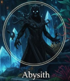Hdranytes:
serpentinos regenerativos, casi imposibles de matar.
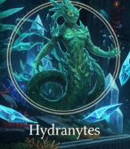Nerathionos:
espíritus abisales que controlan agua oscura.
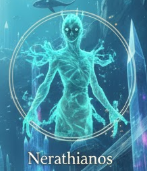Lider:
Su líder, Vaen’Khar, un Nerathiono temido, creía que el océano debía volver a la oscuridad primigenia.
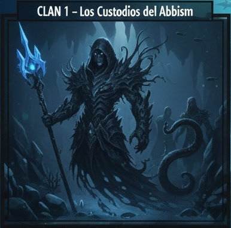
Los Arquitectos del Agua (White)
Creadores, constructores y manipuladores de energía estable. Su ciudad, Aqualis, es la más hermosa: templos, murallas y guardianes hechos de agua cristalizada.
Razas:
Aqualiths:
cuerpos de piedra viva, fuerza bruta.
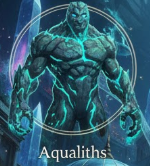Serelianos:
maestros energéticos y lectores emocionales.
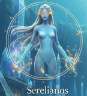Ocearion:
constructos de agua sólida con precisión absoluta.
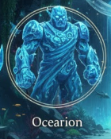Líder:
Su líder, la arquitecta suprema Serelya Vorth, buscaba equilibrio… pero ocultaba un miedo: la energía del océano estaba cambiando.

Los Hijos del Coral Viviente (Blue)
Defensores naturales, protectores de arrecifes, expertos en biotecnología marina.
Razas:
Khar’Nautas:
guerreros con armadura de coral viviente.
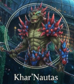Marevantes:
exploradores de movilidad imposible.
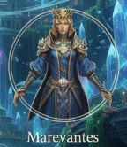Cefalor:
estrategas con tentáculos y mentes brillantes.
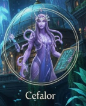Líder:
Su líder, Khaless Marev, siempre defendió la neutralidad; pero sabía que la guerra llegaría tarde o temprano.
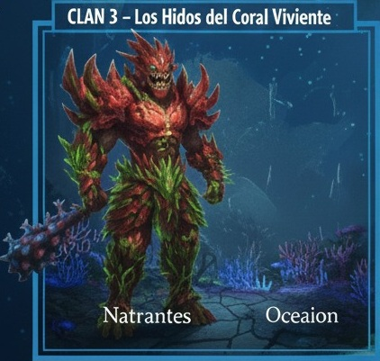
La Orden de la Luz Marina (Green)
Maestros de magia, sanación y control energético. Estudiaban ciclos antiguos, profecías, y los secretos del océano.
Razas:
Lumysir:
iluminadores silenciosos capaces de desvanecerse.
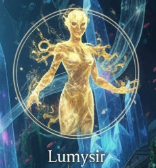Syralun:
serpentinos curativos con cuerpos flexibles.

Thalorianos:
espíritus profundos, puentes entre vida y marea.
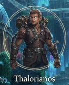Líder:
Su líder, Thalorion el Eterno, era el más sabio… y el único que recordaba la existencia del Tridente Sombrío.
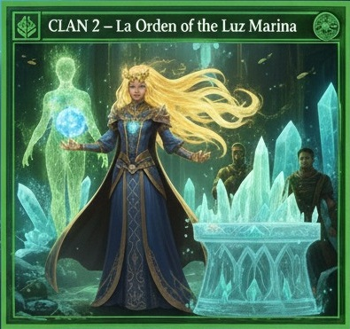ACTO I: LAS CORRIENTES OSCURAS
Algo despertó en el Abismo Primordial. Una vibración. Un pulso. Una luz azulada que no era luz… sino sombra. Vaen’Khar, líder de los Custodios del Abismo, la sintió antes que nadie. “El Tridente nos llama. Quiere un nuevo dueño.” Decidido a reclamar el artefacto, comenzó a mover sus razas: Abysith infiltrándose en todas las capitales, Hdranytes probando defensas, Nerathionos abriendo brechas en aguas prohibidas. La Orden de la Luz Marina detectó la alteración energética. Thalorion convocó a los líderes: —Si el Tridente Sombrío despierta, no habrá océano que sobreviva. Necesitamos unidad. Pero la unidad era una ilusión. Los Arquitectos del Agua desconfiaban de los Custodios. Los Hijos del Coral no querían involucrarse. Y los Custodios estaban demasiado ocupados escondiendo sus planes. La guerra empezó sin declararse.
ACTO II: ALIANZAS IMPROBABLES
Los Arquitectos del Agua, temiendo una invasión sigilosa, formaron la primera alianza: Alianza Blanca-Azul Arquitectos + Hijos del Coral Viviente La unión de creación y defensa. Los Aqualiths forjaban armas vivientes para los Khar’Nautas. Los Serelianos amplificaban señales para los Marevantes exploradores. Los Ocearion construían murallas móviles de agua sólida que los Cefalor guiaban estratégicamente. —No lucharemos por poder, dijo Serelya Vorth, —pero no permitiremos que la oscuridad reclame el océano. Mientras tanto, la Orden de la Luz Marina permanecía neutral… hasta que descubrieron filtraciones Abysith dentro de su ciudad sagrada. Thalorion decidió actuar: Alianza Verde-Azulada (Luz + algunos Custodios disidentes) Un grupo de Nerathionos y Syralun que no apoyaban a Vaen’Khar se unieron a la Orden. Querían evitar que el líder de su propio clan obtuviera el Tridente.
ACTO III: GUERRA ENTRE MAREAS
La guerra estalló en tres frentes principales:
1. La Batalla del Arrecife Susurrante
Custodios del Abismo vs. Hijos del Coral
Los Khar’Nautas hicieron crecer murallas vivas para evitar que los Abysith avanzaran.
Pero los Nerathionos lograron manipular agua oscura y quebrar secciones enteras.
Solo la movilidad de los Marevantes evitó una masacre total.
2. El Sitio de Aqualis
Los Arquitectos del Agua defendieron su ciudad contra hordas serpentinas Hdranytes que regeneraban
heridas casi instantáneamente.
Los Ocearion formaron miles de torres de agua sólida.
Los Aqualiths derribaban enemigos como montañas vivientes.
Pero la presión crecía… y Serelya temía que se quebrara el equilibrio mágico del océano.
3. La Brecha de Luz
La Orden de la Luz Marina luchó contra los Abysith infiltrados.
Los Lumysir creaban destellos cegadores bajo el agua.
Los Syralun sanaban tropas enteras con un solo movimiento.
Los Thalorianos manipulaban corrientes para aislar focos de batalla.
Pero la Orden sabía que no podían ganar solo con defensa.
El Tridente estaba despertando… y Vaen’Khar estaba cada vez más cerca.
ACTO IV: EL TRIDENTE SOMBRÍO
Los cuatro clanes, en diferentes rutas, convergieron hacia el Abismo Primordial. Allí, Vaen’Khar ya había llegado. Su cuerpo, envuelto en agua oscura, parecía fusionarse con el océano. Cuando tocó el Tridente… el océano entero tembló. El artefacto absorbió su esencia… y lo transformó. Vaen’Khar se convirtió en un avatar de oscuridad líquida, capaz de: apagar toda luz, dominar presiones extremas, controlar corrientes, e incluso alterar las emociones de criaturas cercanas. Era invencible.
ACTO V: UNIÓN FORZADA
Con el océano colapsando, los tres clanes restantes se dieron cuenta de una verdad inevitable: “El enemigo no es un clan. Es la oscuridad que quiere devorar Atlantis.” Por primera vez en su historia, los cuatro clanes se unieron… aunque uno fuera el enemigo. Los Arquitectos crearon armas de agua cristalizada para todos. Los Hijos del Coral levantaron defensas móviles en torno al abismo. La Orden de la Luz purificó las corrientes. Y Custodios disidentes abrieron rutas de infiltración. La batalla final fue monumental. Los Marevantes se movían tan rápido que creaban torbellinos. Los Aqualiths chocaron contra Vaen’Khar como montañas vivas. Los Lumysir envolvieron la oscuridad con luz verde brillante. Los Serelianos amplificaron toda energía aliada. Los Cefalor ejecutaron estrategias imposibles. Los Ocearion formaron un sello de agua cristalizada. Los Syralun mantenían vivos a los caídos. Los Nerathionos purificaron el agua oscura desde adentro. Finalmente, uniendo las energías de los cuatro clanes, el Tridente Sombrío fue sellado en una cámara abisal… dejando a Vaen’Khar atrapado dentro.
EPÍLOGO: LA NUEVA MAREA
Tras la guerra, los clanes pactaron algo nunca antes visto: El Pacto de las Cuatro Mareas Cada clan protegería una parte del océano. Compartirían conocimiento. Ningún artifacto ancestral sería reclamado por un solo clan. Y una nueva orden de guardianes, formada por miembros de todas las razas, custodiaría el Abismo Primordial. Atlantis no volvió a ser la misma. Pero por primera vez… era un océano unido. El eco del Tridente sigue vivo, esperando… porque en Atlantis, todo lo que duerme… algún día vuelve a despertar.